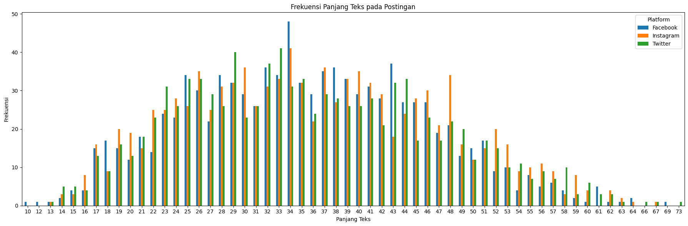

Grafik disamping menjelaskan distribusi penggunaan platform sebagai media sosial. Terlihat bahwa Instagram menjadi platform favorit untuk saat ini.
Halaman ini berisi tampilan grafik yang dihasilkan dari baris kode yang dapat dilihat pada halaman berikut, enjoy!
Grafik disamping menjelaskan distribusi penggunaan platform sebagai media sosial. Terlihat bahwa Instagram menjadi platform favorit untuk saat ini.
Berikut merupakan grafik yang menjelaskan perkembangan user selama 6 bulan terakhir. Dimana, user tersebut adalah yang telah melakukan postingan lebih dari 1 kali.
Bentuk lain dari grafik perkembangan user selama 6 bulan terakhir sebelumnya dapat dilihat pada grafik berikut.
Grafik disamping menjelaskan banyaknya jumlah postingan (frekuensi) yang terjadi dalam sehari pada setiap platform media sosial.
Grafik disamping menjelaskan banyaknya jumlah postingan (frekuensi) yang terjadi dalam sehari, dengan range interval waktu per-4 jam disetiap platform media sosial.
Grafik berikut menjelaskan frekuensi interaksi (likes, comments, dan share) yang ada pada setiap postingan dalam sehari dari grafik sebelumnya, dengan range interval waktu per-4 jam disetiap platform media sosial.
Berikut merupakan grafik yang menjelaskan korelasi panjang teks dari setiap postingan dengan jumlah interaksi (likes, comments, dan share) disetiap platform media sosial.
Grafik berikut menjelaskan banyaknya jumlah korelasi panjang teks (frekuensi) pada postingan disetiap platform media sosial.
